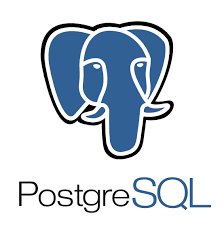
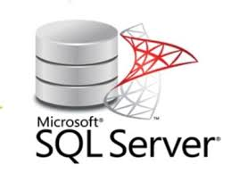

MySQL
MySQL est un système de gestion de bases de données relationnelles (SGBDR) open-source qui utilise le langage SQL (Structured Query Language) pour gérer, manipuler et interroger les données. Il est largement utilisé dans des applications allant des petits projets aux grandes solutions d'entreprise.
- Principales fonctionnalités :
- Gestion des transactions.
- Support des requêtes SQL avancées.
- Optimisation pour des performances élevées.
- Forces :
- Gratuit et open source.
- Large communauté d’utilisateurs.
- Intégration facile avec de nombreux outils.
- Limites :
- Support limité des grosses bases de données complexes.
- Fonctionnalités d’entreprise moins avancées.
Télécharger sur le site officiel
PostgreSQL
PostgreSQL, souvent appelé Postgres, est un système de gestion de bases de données relationnelles (SGBDR) open-source puissant et riche en fonctionnalités. Connu pour sa robustesse, sa conformité avec les normes SQL, et son extensibilité, PostgreSQL est largement utilisé dans des environnements de production critiques.
- Principales fonctionnalités :
- Gestion avancée des données JSON.
- Support des transactions complexes.
- Extensibilité grâce aux modules.
- Forces :
- Robuste et fiable.
- Conforme aux normes SQL.
- Open source.
- Limites :
- Consommation de ressources élevée.
- Courbe d'apprentissage importante.
Télécharger sur le site officiel
MongoDB
MongoDB est une base de données NoSQL qui stocke les données sous forme de documents flexibles semblables à JSON. Contrairement aux bases de données relationnelles traditionnelles (comme MySQL ou PostgreSQL), MongoDB est conçu pour gérer des données non structurées ou semi-structurées, avec un accent sur la scalabilité, les performances élevées, et la facilité de développement.
- Principales fonctionnalités :
- Base de données orientée document MongoDB stocke les données sous forme de documents BSON (Binary JSON). Cela permet de : Gérer des données semi-structurées ou non structurées. Manipuler des données sous forme de paires clé-valeur (similaires à JSON). Faciliter la modélisation des données complexes, comme des listes ou des tableaux imbriqués.
- Flexibilité du schéma MongoDB ne nécessite pas de schéma rigide. Les documents d'une même collection peuvent avoir des champs différents. Idéal pour les applications où les structures de données évoluent rapidement.
- Haute disponibilité et tolérance aux pannes Réplication automatique pour éviter la perte de données. Réallocation automatique des données en cas de panne de serveur (failover).
- Forces :
- Orienté document.
- Tolérance aux pannes et continuité d'accès.
- Sécurité des données pour des cas critiques.
- Limites :
- Consommation élevée de mémoire.
- Absence de structure relationnelle stricte.
- Transactions limitées.
Télécharger sur le site officiel
Oracle

Oracle Database est un système de gestion de bases de données relationnelles (SGBDR) développé par Oracle Corporation. Il est largement reconnu comme l'une des bases de données les plus robustes, performantes et sécurisées, utilisée pour des applications critiques à travers le monde.
- Principales fonctionnalités :
- Gestion relationnelle des données (RDBMS) Basé sur le modèle relationnel, Oracle prend en charge les tables, colonnes, et relations. Conforme au standard SQL avec des extensions via PL/SQL pour les scripts complexes. Garantit l'intégrité des données grâce aux clés primaires, contraintes et triggers.
- Support des environnements cloud Oracle Cloud Infrastructure (OCI) pour déployer des bases de données dans le cloud. Fonctionnalités de migration fluide entre les environnements on-premise et cloud. Services de base de données gérés via Oracle Autonomous Database.
- Compatibilité multi-plateformes Fonctionne sur des systèmes variés : Linux, Windows, UNIX, et dans le cloud. Prise en charge des langages de programmation modernes : Java, Python, C++, etc.
- Forces :
- Fiabilité et Robustesse.
- Support Cloud
- Performances élevées
- Limites :
- Coût élevé.
- Complexité d’administration.
- Fonctionnalités avancées payantes.
Télécharger sur le site officiel
SQL Server
Microsoft SQL Server est un système de gestion de bases de données relationnelles (SGBDR) développé par Microsoft. Il est largement utilisé pour les applications transactionnelles, analytiques et hybrides, grâce à ses fonctionnalités robustes et son intégration fluide avec les outils Microsoft.
- Principales fonctionnalités :
- Système relationnel robuste Support des bases de données relationnelles avec le langage SQL. Prise en charge des données structurées et semi-structurées (JSON, XML).
- Transactions ACID Respect des principes ACID pour garantir l’intégrité des données dans les applications critiques.
- Système relationnel robuste Support des bases de données relationnelles avec le langage SQL. Prise en charge des données structurées et semi-structurées (JSON, XML).
- Forces :
- Version gratuite avec de nombreuses fonctionnalités de base.
- Sécurité avancée (chiffrement, audits, Always Encrypted).
- Interface conviviale et intégration avec les outils Microsoft.
- Limites :
- Licences payantes coûteuses pour les versions complètes.
- Peut être difficile à configurer correctement sans expertise.
- Peut être gourmand en ressources matérielles.
Télécharger sur le site officiel
Tableau récapitulatif
| SDGB | Cout | Norme SQL | Présence d'outils graphiques | Sauvegarde incrémentale | Sauvegarde chaud |
|---|---|---|---|---|---|
| MySQL | MySQL est généralement gratuit et open-source, mais il existe également des versions payantes avec un support commercial. | Supporte SQL standard, mais avec variations | Oui (MySQL Workbench, phpMyAdmin) | C’est supportée, nécessite outils supplémentaires | C’est supportée via outils comme Percona XtraBackup |
| PostgreSQL | PostgreSQL est gratuit et open-source. | Très proche de la norme SQL | Oui (pgAdmin, DBeaver) | C’est supportée avec outils tiers | C’est supportée via outils comme pg_basebackup |
| MongoDB | COUT Oracle est une solution payante avec des coûts de licence et de maintenance élevés MySQL est généralement gratuit et open-source, mais il existe également des versions payantes avec un support commercial. Microsoft SQL Server est une solution payante avec différentes éditions et options de licence. PostgreSQL est gratuit et open-source. MongoDB est généralement gratuit et open-source, mais des options payantes avec un support commercial sont également disponibles. | Il n'utilise pas SQL (NoSQL, BSON) | Oui (MongoDB Compass) | C’est supportée via les outils intégrés | C’est supportée avec MongoDB Ops Manager |
| Oracle | Oracle est une solution payante avec des coûts de licence et de maintenance élevés | Il utilise SQL complet avec extensions propriétaires | Oui (Oracle SQL Developer, Enterprise Manager) | C’est nativement supportée | C’est supportée, diverses options disponibles |
| SQL Server | COUT Oracle est une solution payante avec des coûts de licence et de maintenance élevés MySQL est généralement gratuit et open-source, mais il existe également des versions payantes avec un support commercial. Microsoft SQL Server est une solution payante avec différentes éditions et options de licence. PostgreSQL est gratuit et open-source. MongoDB est généralement gratuit et open-source, mais des options payantes avec un support commercial sont également disponibles. | Supporte SQL standard, mais avec variations | Oui (MySQL Workbench, phpMyAdmin) | C’est supportée, nécessite outils supplémentaires | C’est supportée via outils comme Percona XtraBackup |